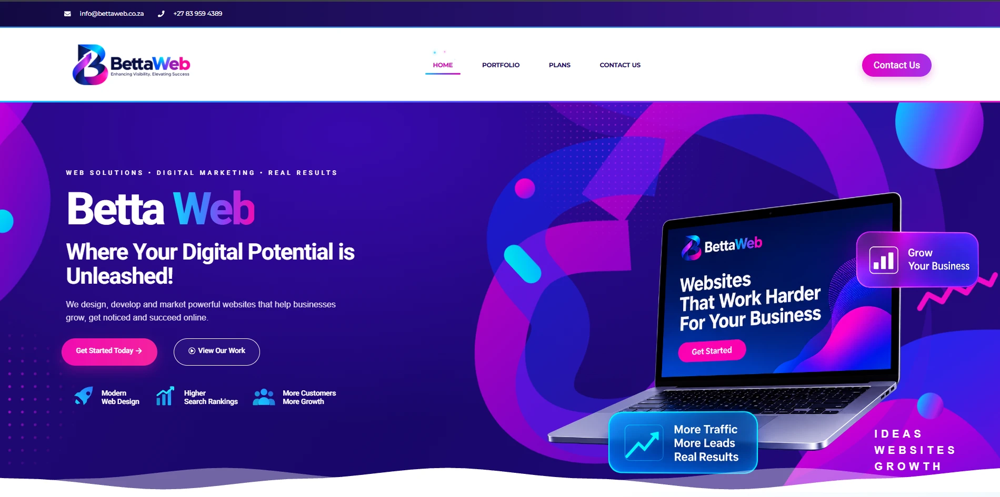
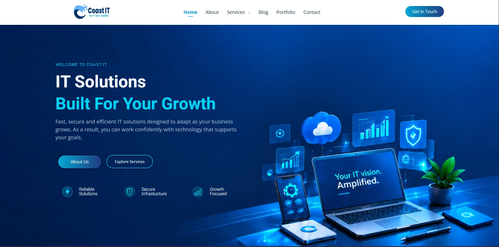
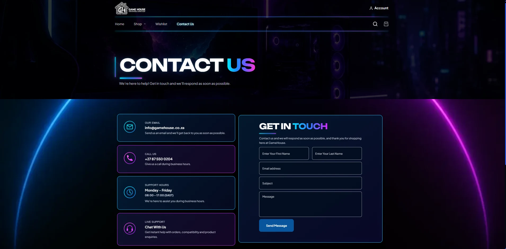
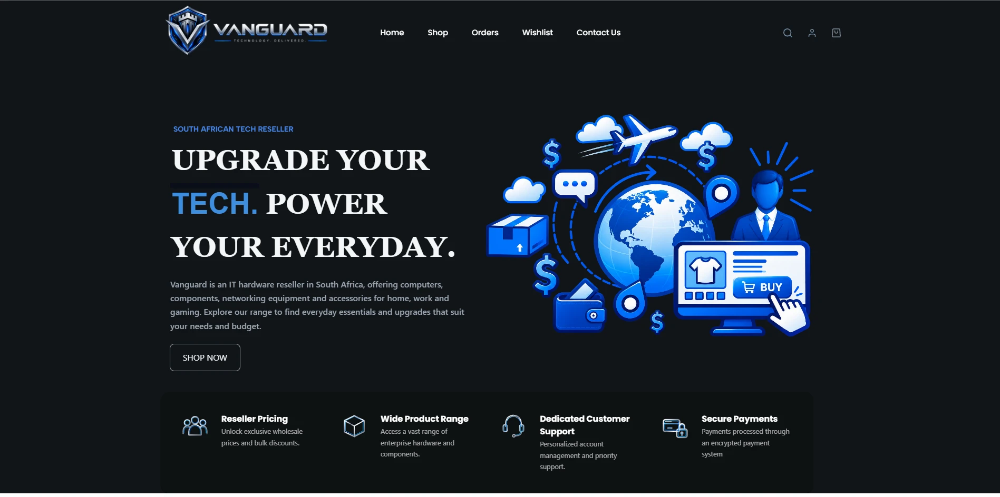
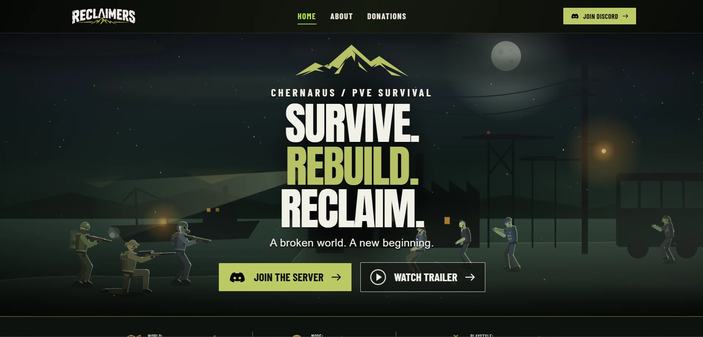
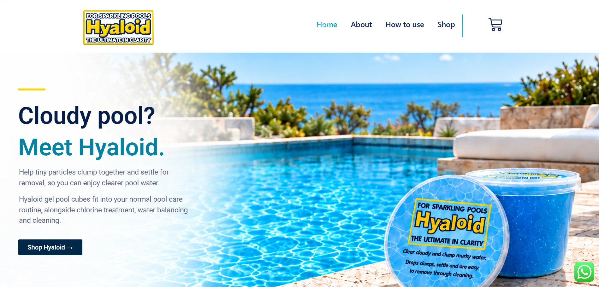

Hover to previewBettaweb
Worked with a team to build a website for someone’s personal business, contributing to the homepage, navigation and footer.
Visit website →I’m Caitlin Hermanus, a web developer building responsive WordPress experiences, with a background in software development and cybersecurity.
Design with care.
Build with purpose.
Keep learning.
01 / SELECTED WORK
WordPress and Elementor websites, including team contributions, a game server website and a reseller website. Each project below describes my role.

Hover to previewWorked with a team to build a website for someone’s personal business, contributing to the homepage, navigation and footer.
Visit website →
Hover to previewContributed to the homepage layout, styling and content for Coast IT’s company website as part of a team. The company website has since changed; this preview shows the version I helped build.
View staging website →
Hover to previewContributed to the contact page.
Visit website →
Hover to previewWorked with a team on a reseller website, contributing to the homepage, navigation and footer. The project was later scrapped; this preview shows the work I contributed.

Hover to previewBuilt the Home, About Us and Donations pages for a DayZ game server website using WordPress and Elementor. A collaborator built the login and registration page. The website is still being built.
Visit website →
Hover to previewBuilt a two-page reseller website using WordPress and Elementor. The main page combines Home, About Us and How to Use sections with scroll navigation, while the Shop is on a separate page.
Visit website →02 / BEYOND WORDPRESS
My software, AI and cybersecurity projects, alongside the client WordPress and Elementor websites above.
Worked on a locally hosted AI prototype. I signed a non-disclosure agreement (NDA), so I cannot discuss how it was built.
Prototype projectContributed to a team-developed CRM supporting lead generation, lead management and sales workflows. I signed a non-disclosure agreement (NDA), so I cannot discuss how it was built or share its source code.
Team project · ConfidentialConfigured firewall rules and tested Kali Linux attacks against Metasploitable 2 in a controlled lab, applying controls to block simulated attacks.
Controlled security labCreated a comic-book inventory website with product descriptions, organised data handling and an interactive store-location map.
Software projectDeveloped a Windows Forms application for student, teacher and course records with input validation and SQL Server storage.
Software projectBuilt an application for faculty, student and course records with add, edit, delete, storage and retrieval functions using SQLite and JDBC.
Software projectModelled a phishing scenario through compromised Wi-Fi in Packet Tracer, assessed firewall and network segmentation controls, and proposed improvements.
Network simulationBuilt a weather application using the OpenWeatherMap API, jQuery and AJAX for dynamic updates.
API integration projectDeveloped a task manager with add, search, delete, export and SQLite storage functions.
Software projectCreated a tax calculator with input handling and error validation.
Software project03 / A LITTLE ABOUT ME
Gqeberha, South Africa
Available for remote work
I enjoy turning a brief into something people can use.
During my Coast IT learnership, I used WordPress and Elementor within a development team on client websites, contributing to layouts, styling, content and functionality. My background also includes web and desktop applications, database integration and locally hosted AI tools.
Cybersecurity training gave me another perspective on building technology: understanding how systems work, testing carefully and solving problems methodically.
CTU Training Solutions
Web Development and Design · NQF 4
Software Development · NQF 5
Cyber Security · NQF 6
Additional practical training in Sophos Firewall configuration and controlled network security testing.
04 / GET IN TOUCH